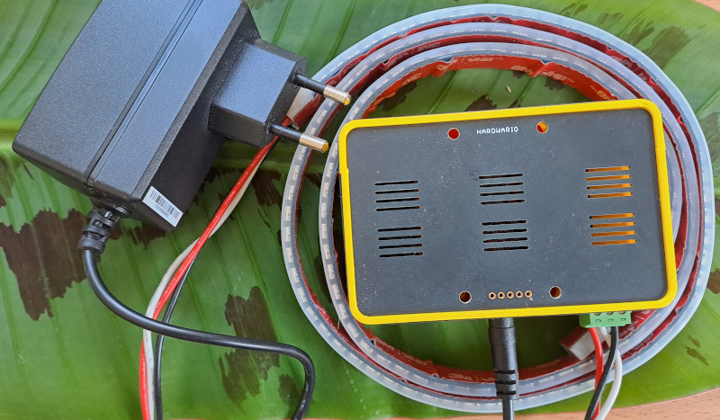
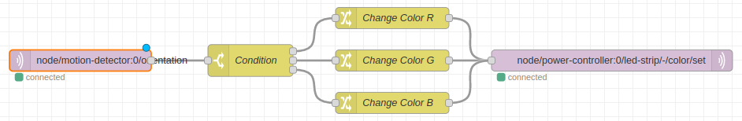

🧑💻 Trvání: 40 minut
🎯 Cílová skupina: pro jednotlivce i skupiny
Úvod
V Hardwario Playground už umíte najít vstupy, přepracovat je a vytisknout je do Dashboardu. Tím jste získali základní dovednosti pro práci se senzory a vizualizací dat.
Následující lekce bude hra s LED páskem, která snad přinese do této části práce světlo a nové možnosti kreativního využití.
Co je připraveno
✅ Máte připravený a spárovaný Button module nebo PIR module.
✅ Umíte v Playgroundu pracovat se zprávou, napsat Change a Switch.
✅ Máte Power module a LED pásek.
Přehraj firmware pro Power Module
Připojte Power Module pomocí USB kabelu a zajděte do záložky Firmware. Ten můj má nahraný twr-radio-power-controller-rgb150, ale rozhodně je dobré jej aktualizovat. LED pásek v tuto chvíli nemusí být připojený, ale opět to ničemu neškodí.
Spáruj Power Module
Power Module je výjimečný tím, že nemá baterie, ale je napájený přímo ze zdroje. Když v záložce Devices stisknete tlačítko "Start pairing", můžete poté zapojit do zdroje Power Module, který se tím dostane do párovacího režimu. Po spárování se ten můj Power Module tváří jako power-controller:0.

Spusťte to!
Programování ve flow opět začněte zprávou, která vám něco pošle. V tuto chvíli tušíte, že způsobů, jak získat zprávu, která něco odstartuje, je více.
✅ Button modul a sledování, kdy je stisknutý.
✅ PIR modul a sledování, kdy je otočený.
✅ Libovolný modul – všechny mají teplotu a vy ji určitě dokážete změnit (ano, tato varianta je jen pro ty, kdo mají hodně trpělivosti a času).
Co poslat do Power Module
Prozatím jste četli ze senzorů pomocí node mqtt in. Teď je potřeba nakrmit Power Module, což umí node mqtt out. Topic, který umí rozzářit pásek, je například: node/power-controller:0/led-strip/-/color/set.
Jakou zprávu poslat
Spojit vstup (stisknutý button se zprávou 1) a výstup (nastavení pásku) by nevedlo k tomu správnému výsledku. Zde je čas na node Change, kde msg.payload přenastavíte na string "#FF0000", tedy červenou barvu.
Pro kód, který umí měnit hodnotu LED pásku podle orientace PIR senzoru, pak stačí přidat Switch a měnit hodnotu barvy, která jde do Power Module.

Barvy a efekty
Byla by škoda nerozsvítit LED světla v plném rozsahu, proto se nebojte vyzkoušet například příkaz node/power-controller:0/led-strip/-/effect/set, kterému ale předáte zprávu {"type":"rainbow", "wait":10}.
Bolí vás oči s přílišného jasu? node/power-controller:0/led-strip/-/brightness/set bere jako zprávu hodnoty 0-100 a nastaví jas.
Adresace
Pásek je možné adresovat po jednotlivých LEDkách pomocí node//led-strip/-/set-pixel/set, zpráva pak obsahuje informace {"type":"rainbow", "wait":10}.
Bolí vás oči s přílišného jasu? node/power-controller:0/led-strip/-/brightness/set bere jako zprávu hodnoty 0-100 a nastaví jas.
Shrnutí
Máte spárovaný Power Module s firmware pro LED pásek.
Umíte rozsvítit LED pásek v různých barvách a přidat i efekty.